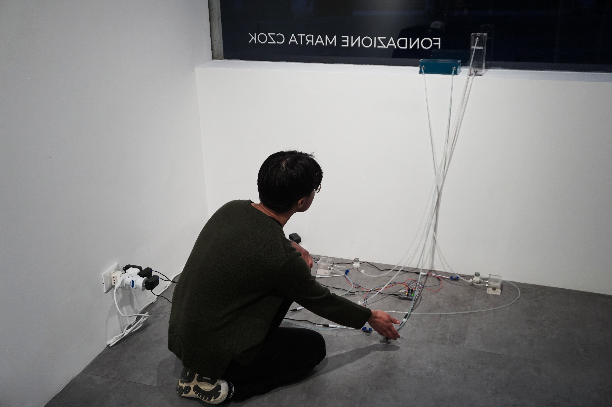
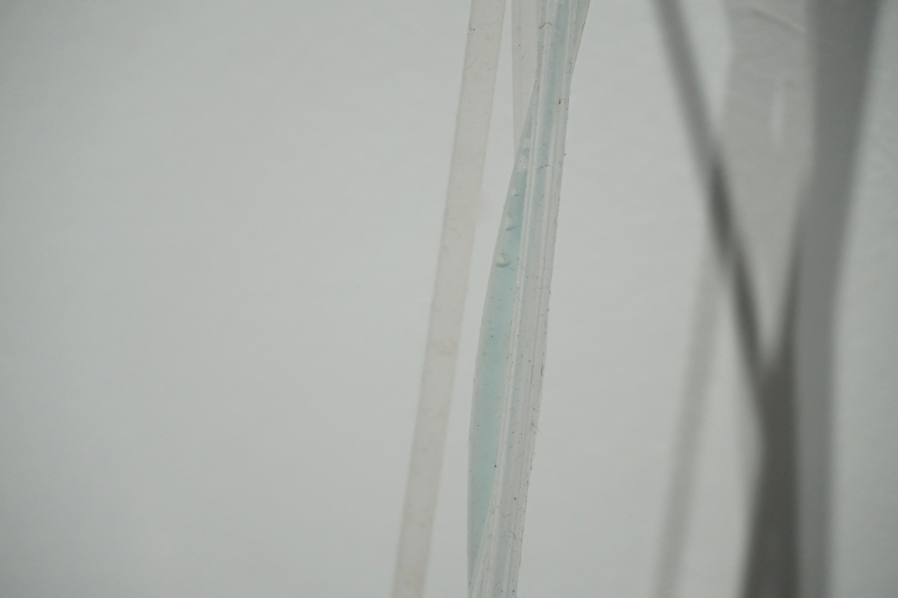
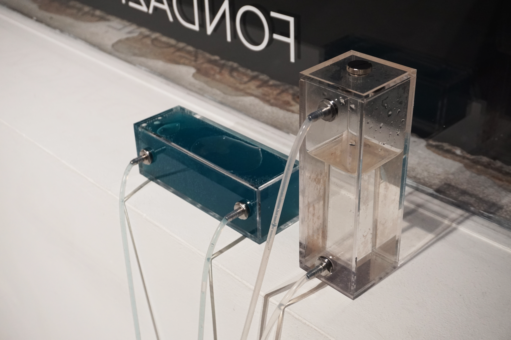

Flows Between
Live audio from contact microphone, ultrasonic distance sensor, humidifier, dosing pump, multi-channel sound
Beile Hu
A contact microphone on the gallery window detects the unseen currents of daily life: our footsteps, movements, and interactions with the gallery and the street. This real-time data becomes a multi-channel soundscape, revealing how our built environment listens to and transforms traces of human presence.